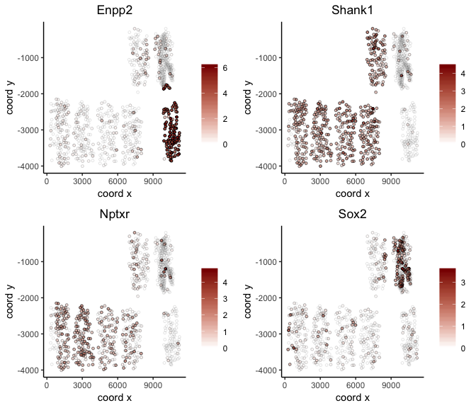
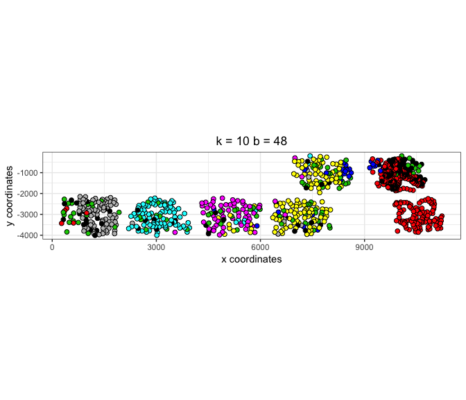
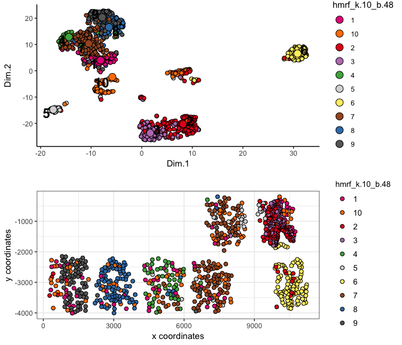

.
.library(Giotto)
Several fields - containing 100's of cells - in the mouse cortex and subventricular zone were imaged. The coordinates of the cells within each field are independent of eachother, so in order to visualize and process all cells together imaging fields will be stitched together by providing x and y-offset values specific to each field. These offset values are estimates based on the original raw image:
.
## visual cortex expression DATA ##
VC_exprs = read.table(system.file("extdata", "cortex_svz_expression.txt", package = "Giotto"))
## prepare cell locations
VC_locs = fread(system.file("extdata", "cortex_svz_centroids_rotated.csv", package = "Giotto"))
my_offset_file = data.table(field = c(0, 1, 2, 3, 4, 5, 6),
x_offset = c(0, 2048, 2048, 2048, 675, 2048, 675),
y_offset = c(2048, 2048, 2048, 2048,0, 0, 2048))
stitch_file = stitchFieldCoordinates(location_file = VC_locs, offset_file = my_offset_file,
cumulate_offset_x = T, cumulate_offset_y = F,
field_col = 'Field of View',
reverse_final_x = F,
reverse_final_y = T)
stitch_file = stitch_file[,.(X_final, Y_final)]
my_offset_file = my_offset_file[,.(field, x_offset_final, y_offset_final)]
## create
VC_test <- createGiottoObject(raw_exprs = VC_exprs, spatial_locs = stitch_file, offset_file = my_offset_file)
## filter
VC_test <- filterGiotto(gobject = VC_test,
expression_threshold = 1,
minimum_detected_genes = 10,
minimum_expression_in_cell = 10,
expression_values = c('raw'),
verbose = T)
#> Number of cells removed: 0 out of 913
#> Number of genes removed: 0 out of 10000
## normalize
VC_test <- normalizeGiotto(gobject = VC_test)
# gene and cell statistics
VC_test <- addStatistics(gobject = VC_test)
# adjust for covariates
VC_test = adjustGiottoMatrix(gobject = VC_test, expression_values = c('normalized'),
batch_columns = NULL, covariate_columns = c('nr_genes', 'total_expr'),
return_gobject = TRUE,
update_slot = c('custom'))
# plain visualization
visPlot(gobject = VC_test)
#> first and second dimenion need to be defined, default is first 2

## HVG genes
VC_test <- calculateHVG(gobject = VC_test)
#>
#> no yes
#> 8771 1229

# selected genes
gene_metadata = fDataDT(VC_test)
featgenes = gene_metadata[(hvg == 'yes') & perc_cells > 4 & mean_expr_det > 0.5]$gene_ID
# pca
VC_test <- runPCA(gobject = VC_test, genes_to_use = featgenes)
# umap
VC_test <- runUMAP(VC_test)
# tsne
VC_test <- runtSNE(VC_test)
## cluster
# SNN
VC_test <- createNearestNetwork(gobject = VC_test)
# cluster on network
VC_test = doLeidenCluster(gobject = VC_test, resolution = 0.5,
python_path = "/Users/rubendries/Bin/anaconda3/envs/py36/bin/python")
plotUMAP(gobject = VC_test, cell_color = 'pleiden_clus', point_size = 1.5,
show_NN_network = T, edge_alpha = 0.1)

# expression and spatial
visSpatDimPlot(gobject = VC_test, cell_color = 'pleiden_clus', dim_point_size = 2, spatial_point_size = 2)
#> first and second dimenion need to be defined, default is first 2

# relationship between clusters
clusterheatmap <- showClusterHeatmap(gobject = VC_test, cluster_column = 'pleiden_clus')
print(clusterheatmap)

# pairwise t-test #
gene_markers = findMarkers(gobject = VC_test, cluster_column = 'pleiden_clus')
gene_markers_pair = findMarkers(gobject = VC_test, cluster_column = 'pleiden_clus',
group_1 = c(1,3), group_2 = c(2,4,5))
# Gini markers #
gini_markers = findGiniMarkers(gobject = VC_test, cluster_column = 'pleiden_clus')
gini_markers_DT = gini_markers[, head(.SD, 3), by = 'cluster']
myheat = plotHeatmap(gobject = VC_test, genes = gini_markers_DT$genes,
cluster_column = 'pleiden_clus')

violinPlot(gobject = VC_test, genes = c('Nptxr', 'Cplx1', 'Fgfr3', 'Cldn5', 'Cldn11', 'Igfbp5', 'Sox2', 'Thbs4', 'Clic6'),
cluster_column = 'pleiden_clus')

#> first and second dimenion need to be defined, default is first 2

## spatial network
VC_test <- createSpatialNetwork(gobject = VC_test, k = 3)
VC_test <- createSpatialNetwork(gobject = VC_test, k = 100, maximum_distance = 200, minimum_k = 1, name = 'distance_network')
visPlot(gobject = VC_test, show_network = T, network_color = 'blue', point_size = 1)
#> first and second dimenion need to be defined, default is first 2

## spatial grid
VC_test <- createSpatialGrid(gobject = VC_test,
sdimx_stepsize = 500,
sdimy_stepsize = 500,
minimum_padding = 50 )
# spatial pattern genes
VC_test = detectSpatialPatterns(gobject = VC_test, dims_to_plot = 1)

#> [1] "Dim.1"
#> [1] "Dim.2"

## spatial genes
VC_test <- calculateSpatialGenes(gobject = VC_test, min_N = 20)
spatial_gene_DT <- calculateSpatialGenes(gobject = VC_test , method = 'kmeans', return_gobject = F)
# visualize
visGenePlot(gobject = VC_test, genes = c('Enpp2', 'Shank1', 'Nptxr', 'Sox2'),
scale_alpha_with_expression = T)

# select 500 spatial genes
gene_data = fDataDT(VC_test)
spatial_genes = gene_data[SV == 'yes' | spg == 'yes']$gene_ID
set.seed(seed = 1234)
spatial_genes = spatial_genes[sample(x = 1:length(spatial_genes), size = 500)]
# run HMRF
HMRFtest = doHMRF(gobject = VC_test, expression_values = 'scaled',
spatial_genes = spatial_genes,
k = 10,
betas = c(40, 4, 3),
output_folder = '/Volumes/Ruben_Seagate/Dropbox/Projects/GC_lab/Ruben_Dries/190225_spatial_package/Data/package_testHMRF/',
python_path = "/Users/rubendries/Bin/anaconda3/envs/py36/bin/pythonw")
#>
#> expression_matrix.txt already exists at this location, will be used again
#>
#> spatial_genes.txt already exists at this location, will be used again
#>
#> spatial_network.txt already exists at this location, will be used again
#>
#> spatial_cell_locations.txt already exists at this location, will be used again
# view HMRF results for multiple tested betas
viewHMRFresults(gobject = VC_test,
HMRFoutput = HMRFtest,
k = 10, betas_to_view = c(44, 48), point_size = 2)
#> [1] "/Users/rubendries/Bin/anaconda3/envs/py36/bin/pythonw /Library/Frameworks/R.framework/Versions/3.5/Resources/library/Giotto/python/get_result2.py -r /Volumes/Ruben_Seagate/Dropbox/Projects/GC_lab/Ruben_Dries/190225_spatial_package/Data/package_testHMRF//result.spatial.zscore -a test -k 10 -b 44"
#> first and second dimenion need to be defined, default is first 2

#> [1] "/Users/rubendries/Bin/anaconda3/envs/py36/bin/pythonw /Library/Frameworks/R.framework/Versions/3.5/Resources/library/Giotto/python/get_result2.py -r /Volumes/Ruben_Seagate/Dropbox/Projects/GC_lab/Ruben_Dries/190225_spatial_package/Data/package_testHMRF//result.spatial.zscore -a test -k 10 -b 48"
#> first and second dimenion need to be defined, default is first 2

# add the HMRF results of interest
VC_test = addHMRF(gobject = VC_test,
HMRFoutput = HMRFtest,
k = 10, betas_to_add = c(48))
#> [1] "/Users/rubendries/Bin/anaconda3/envs/py36/bin/pythonw /Volumes/Ruben_Seagate/Dropbox/Projects/GC_lab/Ruben_Dries/190225_spatial_package/Data/Qian_input_files//get_result2.py -r /Volumes/Ruben_Seagate/Dropbox/Projects/GC_lab/Ruben_Dries/190225_spatial_package/Data/package_testHMRF//result.spatial.zscore -a test -k 10 -b 48"
# co-visualize
visSpatDimPlot(gobject = VC_test, cell_color = 'hmrf_k.10_b.48', dim_point_size = 2, spatial_point_size = 2)
#> first and second dimenion need to be defined, default is first 2


## cell-cell interaction ##
## calculate and visualize cell-cell proximities
cell_proximities = cellProximityEnrichment(gobject = VC_test, cluster_column = 'cell_types')
cellProximityBarplot(CPscore = cell_proximities)

cellProximityHeatmap(CPscore = cell_proximities, order_cell_types = T)

cellProximityVisPlot(gobject = VC_test, interaction_name = 'Astrocyte-Oligo',
cluster_column = 'cell_types',
cell_color = 'cell_types', show_network = T, network_color = 'blue')
#> first and second dimenion need to be defined, default is first 2


cell_int_gene_scores = getCellProximityGeneScores(gobject = VC_test, cluster_column = 'cell_types')
#> start Outer Neuron-Outer Neuron
#> start Endothelial-Outer Neuron
#> start Astrocyte-Outer Neuron
#> start Inner Neuron-Outer Neuron
#> start Astrocyte-Astrocyte
#> start Astrocyte-Inner Neuron
#> start NSC-Outer Neuron
#> start Inner Neuron-Oligo
#> start Oligo-Outer Neuron
#> start Inner Neuron-NSC
#> start Endothelial-Inner Neuron
#> start Inner Neuron-Inner Neuron
#> start Endothelial-Endothelial
#> start Astrocyte-Endothelial
#> start Astrocyte-Oligo
#> start Endothelial-Oligo
#> start Oligo-Oligo
#> start NSC-NSC
#> start Astrocyte-NSC
#> start Choroid Plexus-Choroid Plexus
#> start Endothelial-NSC
#> start NSC-Oligo
#> start Choroid Plexus-NSC
#> start Choroid Plexus-Endothelial
#> start Astrocyte-Choroid Plexus
# selection
setorder(cell_int_gene_scores, -diff_spat)
selection = cell_int_gene_scores[nr_1 > 5 & nr_2 > 5, head(.SD, 1), by = interaction][1:2]
plotCellProximityGeneScores(CPGscores = cell_int_gene_scores,
selected_interactions = selection$interaction[1],
selected_genes = selection$genes[1])

plotCellProximityGeneScores(CPGscores = cell_int_gene_scores,
selected_interactions = selection$interaction,
selected_genes = selection$genes[1],
detail_plot = T, facet.scales = 'fixed',
simple_plot = T,
simple_plot_facet = 'genes',
facet.ncol = 1, facet.nrow = 2)

example: ligand - receptor combinations

LR_data = fread(system.file("extdata", "mouse_ligand_receptors.txt", package = 'Giotto'))
ligands = LR_data$mouseLigand
receptors = LR_data$mouseReceptor
my_subset_interactions = c('Endothelial-NSC', 'Inner Neuron-NSC')
LR_VC = getGeneToGeneScores(CPGscore = cell_int_gene_scores,
selected_genes = NULL,
selected_cell_interactions = my_subset_interactions,
specific_genes_1 = ligands, specific_genes_2 = receptors)
#>
#> use specific gene-gene interactions
#>
#> start specific gene-gene interactions
# select top 2
setorder(LR_VC, -diff_spat)
pair_selection = LR_VC[nr_1 > 5 & nr_2 > 5, head(.SD, 1), by = interaction][1:2]
# detailed plot
plotCellProximityGeneToGeneScores(GTGscore = LR_VC,
selected_interactions = pair_selection$interaction,
selected_gene_to_gene = pair_selection$gene_gene, detail_plot = T)

# simple plot per gene-gene
plotCellProximityGeneToGeneScores(GTGscore = LR_VC,
selected_interactions = pair_selection$interaction,
selected_gene_to_gene = pair_selection$gene_gene,
simple_plot = T,
simple_plot_facet = 'genes')

# simple plot per cell-cell interaction
plotCellProximityGeneToGeneScores(GTGscore = LR_VC,
selected_interactions = pair_selection$interaction,
selected_gene_to_gene = pair_selection$gene_gene,
simple_plot = T,
simple_plot_facet = 'interaction')